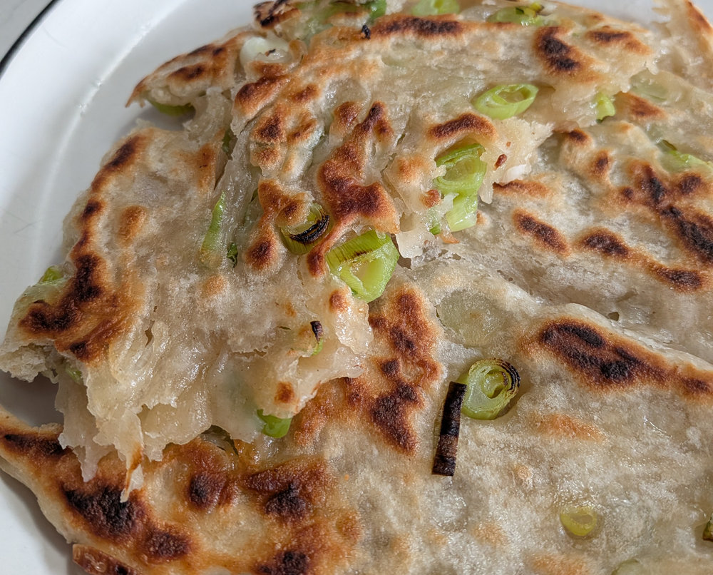

Sourdough Discard Scallion Pancakes
 Makes one 8-9 inch pancake (can be doubled or tripled)
Makes one 8-9 inch pancake (can be doubled or tripled) 1 hour 15 minutes
1 hour 15 minutes Source
Source Meat
Meat
A thin, crispy sourdough discard scallion pancake made by folding oiled, salted dough with chopped scallions

For the dough
100gall-purpose flour45gwarm water50gsourdough starter discard, cold from the fridge is fine
Mix the discard and water together, then incorporate the flour completely. Knead lightly until the dough forms a smooth, pliable ball, about 3-5 minutes.
Cover the bowl and let the dough rest for 1-2 hours.
Filling & cooking
12goil, plus more for frying3gsalt20-25gspring onions, finely chopped (2-3 stalks)- Sesame seeds, to taste
Lightly oil the dough to prevent sticking, then roll it out as thin as possible into a circle or square, taking care not to tear it.
Drizzle the oil evenly over the dough, working it out to the corners. Sprinkle with the salt, then scatter the scallions evenly over the top.
Starting at one end, fold the dough flatly onto itself in 2-3 inch increments until it resembles a flattened roll. Take one end of the roll and continue folding onto itself in 2-3 inch increments until you have a square.
Roll the square out thinly and firmly into an approximately 8-inch circle or square. Don’t worry if oil or scallions poke through — aim for a thin pancake without breaking it.
Sprinkle sesame seeds over one side.
Heat a skillet over high heat and coat the bottom with oil until it sizzles. Gently place the pancake in the pan and cook for 3-4 minutes per side, until golden brown on both sides.
Remove from the pan and let cool slightly before cutting.
Serve with a cucumber salad: sliced cucumber, minced garlic, black vinegar, salt, a drizzle of sesame oil, and optional crunchy peanut butter.